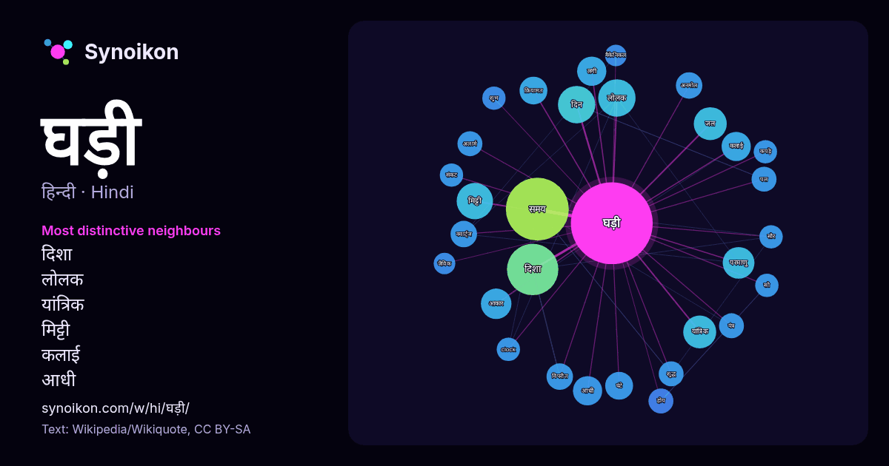

हिन्दी · आज के शब्दों की सूची
घड़ी
“clock” · विकिपीडिया, Wikiquote के 779 प्रयोगों में इसके आसपास मिले शब्द।

सबसे विशिष्ट पड़ोसी
- दिशा 20×
- लोलक 19×
- यांत्रिक 13×
- मिट्टी 13×
- कलाई 12×
- आधी 11×
- क़ियामत 11×
- परमाणु 10×
- क्वार्ट्ज 9.9×
- अनमोल 9.7×
- होय 8.9×
- अलार्म 8.8×
- पल 8.5×
- clock 8.0×
- लगी 7.8×
- यंत्र 7.6×
- समय 7.6×
- जल 7.4×
- घंटे 7.3×
- शुभ 7.3×
× = सामान्य विकिपीडिया टेक्स्ट की तुलना में कितने गुना अधिक।
सबसे अधिक आने वाले पड़ोसी
- समय 51
- दिशा 34
- दिन 18
- लोलक 18
- मिट्टी 17
- प्रकार 16
- गई 15
- जल 14
- यांत्रिक 14
- उपयोग 13
- परमाणु 13
- आकार 12
- वाली 12
- आधी 11
- कलाई 11
- पानी 11
- बड़ी 11
- लगी 11
- हर 11
- क़ियामत 10
संदर्भ में
- सिद्धान्तों से बनायी जाती हैं। जैसे धूप घड़ी, यांत्रिक घड़ी, एलेक्ट्रॉनिक घड़ी आदि। अधिकतर घड़ियों में नियमित रूप से आवर्तक (recurring) क्रियाएँ उत्पन्न Wikipedia snippets · घड़ी
- सौर घड़ी का प्रयोग सूर्य की दिशा से समय का ज्ञान करने के लिए किया जाता था। इन घड़ियों की कार्यशैली और क्षमता दिन के समय तक सीमित होती थी क्योंकि यह Wikipedia snippets · सौर घड़ी
- लोलक घड़ी (pendulum clock) वह घड़ी है जिसमें समय प्रदर्शित करने वाली प्रणाली का चालन एक लोलक की सहायता से होता है। इसका आविष्कार सन १६५६ में क्रिश्चियन Wikipedia snippets · लोलक घड़ी
- अनमोल घड़ी 1946 में बनी हिन्दी भाषा की फिल्म है। सुरेन्द्र सुरैया - बसंती नूरजहाँ मुराद लीला मिश्रा पिंचू कपूर - प्रकाश अनमोल घड़ी इंटरनेट मूवी डेटाबेस Wikipedia snippets · अनमोल घड़ी
- घड़ी १५०५ / (१५०५ 1505 का PHN1505 या पोमंदर वॉच) दुनिया की पहली घड़ी है। इस घड़ी के आविष्कारक,जर्मन, नूर्नबर्ग के ताला बनाने वाले और घड़ीसाज़ पीटर हेनलेन Wikipedia snippets · घड़ी १५०५
- घड़ियों का इतिहास 10वीं से 18वीं शताब्दी के बीच शुुरू हुुुआ था। प्रारंभिक रूपों से विकसित होकर घड़ी वर्तमान रूप मेें उपलब्ध हुई है। घड़ी-उद्योग की विकास Wikipedia snippets · घड़ियों का इतिहास
- प्राचीन काल मैं समय ज्ञात करने के लिए पानी की घड़ी का उपयोग किया जाता था पानी के घड़ी का उपयोग समय के मापन मैं किया जाता था इसे बनाने मैं अलग अलग तरह Wikipedia snippets · पानी की घड़ी
- प्रकार शुद्ध समय देनेवाली नाक्षत्र घड़ी मिल जाए, ते हमें अपनी माध्य घड़ी के समय को शुद्ध रख सकते हैं। यद्यपि नाक्षत्र घड़ी भी यांत्रिक होती है तथा उसमें भी Wikipedia snippets · नाक्षत्र समय
और शब्द
- इतिहास
- ईश्वर
- कार्य
- कुत्ता
- गर्मी
- गाना
- घंटी
- घोड़ा
- चाय
- चित्रकला
- छाया
- जंगल
- जलवायु
- जीवन
- तूफ़ान
- दर्पण
- द्वीप
- नक्षत्र
- नमक
- परिवार
- पहाड़
- पानी
- पैसा
- प्रकृति
- बगीचा
- बिल्ली
- भाषा
- भोजन
- माता
- मानचित्र
- मृत्यु
- मौन
- रेगिस्तान
- रेलगाड़ी
- रोटी
- वर्षा
- विज्ञान
- शक्ति
- शरद
- शहद
- शहर
- सड़क
- सत्य
- समय
- सर्दी
- सेतु
- स्वर्ण
- स्वास्थ्य
- हृदय
2026-10-09 को डिफ़ॉल्ट सेटिंग्स (±5 शब्द, मध्यम कॉर्पस) के साथ पहले से गणना की गई। इंटरैक्टिव मानचित्र इसे लाइव डेटा से ताज़ा कर सकता है।
मशीन-अनूदित इंटरफ़ेस; सुधारों का स्वागत है।